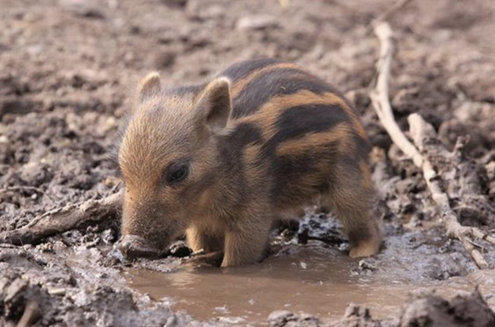

動物の説明
日本の山林に広く生息する、力強い体と鋭い牙が特徴の哺乳類です。古くから十二支の「亥」や、ジビエ料理（ぼたん鍋）の食材としても親しまれてきました。 「猪突猛進」という言葉から、ただ闇雲に突進するイメージがありますが、本来は非常に警戒心が強く、知能も高い動物です。優れた嗅覚を使い、地中の根や昆虫、農作物などを食べる雑食性です。 春に生まれる子供は、背中に瓜のような縞模様があることから「ウリ坊」と呼ばれ愛らしい姿をしていますが、成獣の突進力は凄まじいため注意が必要です。

類似種
ブタ
イノシシを品種改良した家畜で、世界中で親しまれています。 実は非常に知能が高く、本来はトイレの場所を覚えるほど綺麗好きな性格です。 よく行う「泥浴び」は、汗をかけない体質の彼らにとっての体温調節やスキンケアです。

天然の迷彩服
ウリ坊
ウリ坊の背中にある特徴的な縞模様は、木漏れ日や草むらに紛れて外敵から身を守るための「天然の迷彩服」です。 この可愛らしい模様は生後4〜5ヶ月ほどで消え、秋ごろには大人のイノシシと同じ茶色の毛に変わってしまいます。